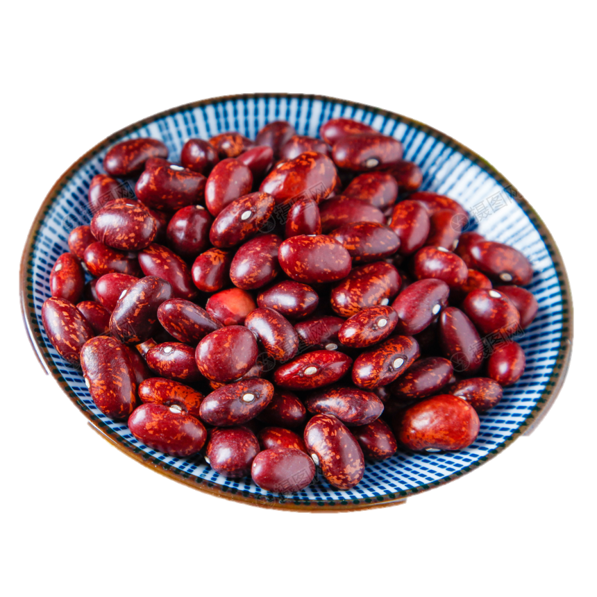
Ingredientes para una bandeja paisa para 6 personas
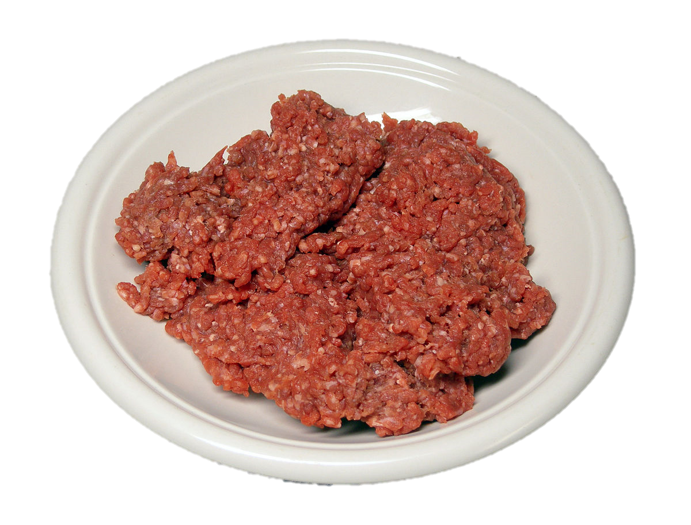
2 libras de carne pulpa molida
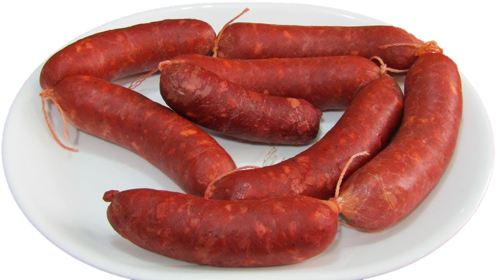6 chorizos
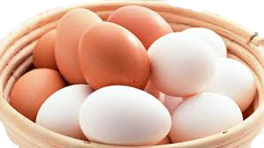6 huevos
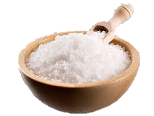
sal al gusto
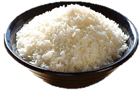1 libra de arroz
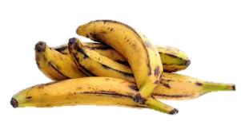3 plàtanos maduros
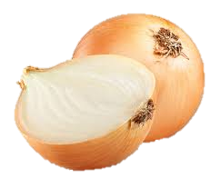
4 cebollas grandes
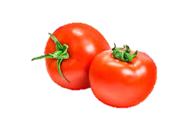4 Tomates
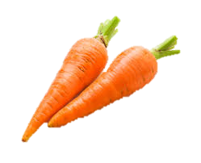1 zanahoria mediana
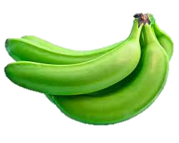
Medio platano verde
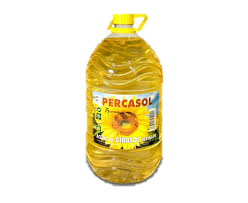Aceite
El exito de la bandeja paisa esta en lapreparacion de los frijoles
Para que tus fríjoles sean más fáciles de cocinar, debes ponerlos a remojar en un recipiente con agua. Déjalos toda la noche para que estén más blandos a la hora de ponerlos a cocinar. Prepara el hogao picando finamente las cebollas y los tomates. En una sartén con un poco de mantequilla y ajo al gusto, ponlos a sofreír durante diez minutos. Para la cocción de los fríjoles utiliza la olla exprés, esto te ahorrará un poco de tiempo. Agregar y cubrir con agua y échales la mitad del hogao, medio plátano verde y la zanahoria mediana partida en trozos. Déjalos pitar aproximadamente por media hora.Después que hayan pitado, sácales la zanahoria, el plátano y una taza de agua y licuar. Agrega esta mezcla a los fríjoles nuevamente y ponlos a fuego medio –bajo a espesar.
Paso a paso para hacer tu bandeja paisa
Mientras se cocinan tus fríjoles, encárgate de terminar los demás alimentos de tu preparación:
1. Sofríe la carne molida en una sartén con un poco de aceite, sal y la otra mitad del hogao que habías preparado inicialmente.
2. Frita en un olla con aceite bien caliente los chicharrones y los chorizos
3. De igual forma, prepara las tajadas de maduro en un sartén con aceite
4. En una cacerola, con un poco de mantequilla y sal, frita los huevos
5. Prepara el arroz utilizando dos tazas de agua por cada taza de arroz, un poco de aceite y sal al gusto. Deja cocinar a fuego medio hasta que el arroz esté seco.
Estamos listos para servir nuestra bandeja paisa. Acompáñala con una arepa pequeña blanca o amarilla según tu gusto, una porción de aguacate y, si lo deseas, uno deliciosos patacones de plátano verde. Si te sobran alimentos de la bandeja paisa, no te deshagas de ellos. Guárdalos para el desayuno del día siguiente y tendrás otro plato típico colombiano llamado “calentao”.